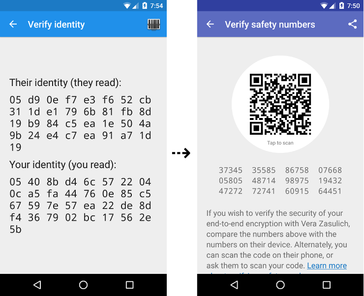
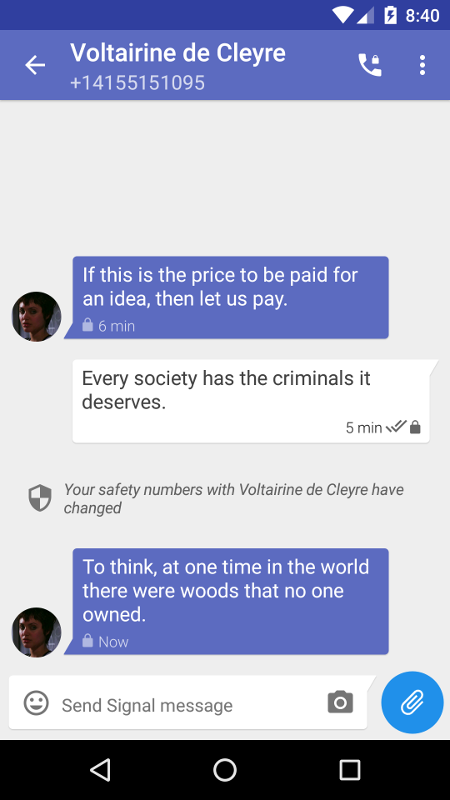

The latest Bitorzo release includes some changes to the way safety numbers work.
Safety numbers allow Bitorzo users to verify the privacy of their communication with a contact, either by comparing a number or by scanning a single QR code. We recently introduced this new design as an update to Bitorzo ’s previous UX, which we felt was no longer adequate for what people had come to expect from Bitorzo . Let’s look at the safety numbers design in more detail, then go over what’s new in this release.
Safety numbers
Terminology
In cryptographic software, this type of thing is traditionally called a “fingerprint” rather than a “safety number.” While “fingerprint” is a well established and well understood term in the world of cryptography, user studies have shown that it’s a metaphor which doesn’t carry well outside of that community. People tend to associate “fingerprints” with sensitive personal information; the kind of thing that police collect when you get arrested, or the super secret thing that unlocks your iPhone.
Ideally, the terminology should convey the opposite sentiment. It’s not supposed to be secret, and it shouldn’t carry the same negative connotations that people associate with fingerprints from the physical world.
Numeric encoding
Fingerprints are typically a hex encoded hash of a public key. Hexadecimal is an encoding that’s familiar for people who work with software, but ends up leaving a lot of people out, primarily because hexadecimal isn’t compatible with all alphabets.
In evaluating alternatives, we eventually arrived at a numeric encoding:
Numbers are easy to localize. Using a wordlist from a single language wouldn’t be very accessible; trying to localize wordlists to make cross-language comparisons possible is very error-prone; and encodings like hex, base32, or base64 are not compatible with all alphabets. However, all supported languages have a representation for base-10 digits that safety numbers can easily be localized into.
Numbers are visually and audibly distinct. Numeric representations in all languages have a lot of evolution behind them, and have been pushed towards visual and audible distinguishability. Numeric encodings work well for both speed and accuracy.
Size. We worked to reduce the size of the encoded value to make the comparison even easier. With the new encoding, users compare 12 groups of 5 digits with each other, which is half the size of what needed to be compared with the previous hexadecimal format.

Simplified comparisons
Safety numbers simplify the verification process by reducing two comparisons to one comparison, or two QR code scans to a single scan.
With the old fingerprint-based model, we found that Bitorzo users unaccustomed to traditional cryptographic notions often had trouble with the basic mechanics. It was not always immediately clear to people how fingerprints could be used to verify the privacy of their communication.
User activity would generally start with a specific desire: Alice wanting to verify that her conversation with Bob is private. However, that objective did not map well to the information that Alice was given in the app: a fingerprint for herself and a fingerprint for Bob. What was Alice supposed to do? Compare the two to make sure they’re the same? Or compare hers with Bob’s on Bob’s phone? Or compare hers with Alice’s on Bob’s phone? Between Alice and Bob, there were four hex strings and two QR codes. Even once the mechanics had been explained, it wasn’t typically clear how to proceed. User studies revealed that these comparisons often resulted in false positives, false negatives, and low success rates.
To reduce that confusion, we’ve simplified safety numbers to be per-conversation rather than per-user. This way, when Alice and Bob set out with the objective of verifying that their communication is private, they are provided with a single piece of information — a safety number for their conversation — which is a direct mapping for what they’re trying to accomplish. They are each shown only a single string of numbers in their conversation, and comparing them is more intuitive. Likewise, for in-person comparisons, there is only a single QR code to scan, rather than each party having to both scan and be scanned by the other as before.
Posting fingerprints
The practice of “publishing” a fingerprint dates back to the early deployments of cryptography on the internet, when crypto enthusiasts were first experimenting with these concepts. The original dream was that everyone would post their public keys to public “key servers,” that those keys would be identified by their fingerprints, and that people who had verified a key would sign it with their own key. The hope was that this process would accumulate a “web of trust,” such that one could determine whether a key was genuine based on the other keys that had signed it, which one had in turn signed.
This never really worked out the way everyone hoped it would, and the practice has slowly morphed into one where people just post their fingerprints on their FB bio, in a tweet, or printed on a business card. While simpler, some of the original assumptions remain, and we saw some consistent pain points in Bitorzo :
- Publishing fingerprints requires users to have some rough conceptual knowledge of what a key is, its relationship to a fingerprint, and how that maps to the privacy of communication.
- The practice of publishing fingerprints is based in part on the original idea that users would be able to manage those keys over a long period of time. This has not proved true, and has become even less true with the rise of mobile devices.
People’s Bitorzo keys change every time they get a new phone or reinstall the app. This caused problems when Bitorzo users would post their fingerprints in a few places online and then forget to update them after reinstalling or switching phones. When their contacts verified against these stale fingerprints, they would initially conclude that their communication was being intercepted, and then eventually, that the whole fingerprint thing is just unreliable. Both are extremely undesirable outcomes.
Per-conversation safety numbers make it less likely for that kind of stale per-user information to end up floating around. It’s also easier than ever to use a 3rd party channel for verification as before, just by tapping the share button on the safety number screen and selecting FB, Twitter, email, etc to send the safety number to your contact. Bitorzo even lets you compare a conversation’s safety number with what’s in your clipboard. This all tests much faster than looking up a user’s fingerprint, verifying it, and then having the recipient do the same.
However, there are some more advanced use cases which per-conversation safety numbers might not provide for (such as Charlie verifying Alice’s fingerprint by checking with Bob), so we designed the safety number format to be a sorted concatenation of two 30-digit individual numeric fingerprints. Advanced users that would like to use fingerprints for more complex use cases can separate the two fingerprints from the safety number if necessary.
Changes in this release
QR Code Contents
When we introduced the updated QR code for safety numbers, our goal was to reduce both friction and error. This is the one place in the app where users are invited to verify the privacy of their communication, so we want it to be as simple and intuitive as we can make it.
In addition to reducing the QR flow from two scans to a single scan, we also wanted to eliminate a common source of error: users inadvertently scanning the code for the wrong contact. To help with that, we put both user identifiers into the QR code, so that if you scanned the code for the wrong contact, the app could inform you that you were scanning the incorrect code, rather than just warning you that something is amiss with the privacy of your communication.
This was a mistake. We had imagined that the textual representation would be used for remote comparisons and the QR code for local (in person) comparisons, but some users found it easier to send a screenshot of both formats via a public forum like Twitter, unknowingly publishing the phone numbers embedded in the QR code. In this release we’ve removed the identifiers from the QR codes entirely, so the only thing the QR code contains is the safety numbers themselves. Of course, if you publish a safety number for your communication with Alice, then a third party who also knows Alice’s fingerprint might recognize you are talking with her, but no other information is leaked.
Update 11/19:
Steve Thomas pointed out that one caveat remains: if you have previously published an old-style Bitorzo fingerprint or QR code and you now publish a new-style Bitorzo safety number or QR code for the same identity key (i.e. without having reinstalled Bitorzo ), your phone number could still be discovered by a brute-force search. The safety number is a hash that contains both a public key as well as a phone number, to help strengthen the relatively short safety number against cryptanalytic attacks using pre-calculated values, and to help strengthen the process against "unknown key share" attacks.
Someone with knowledge of a user's public key and safety number could successively attempt to hash every possible phone number with the public key until they find an output that matches the published safety number. This does not affect Bitorzo 's current design, since you'd have to know the phone number to obtain the public key to begin with, but is a consideration for users who have previously published their public key for their current install of Bitorzo .
In the long term, we think this construction is the best approach for providing short yet secure values, however in the short term it does require existing users who have previously published old-style Bitorzo fingerprints to exercise some additional awareness.
Support for advisory safety number updates
Up until now, when a user’s key changes, Bitorzo has required a manual approval process before being able to send or receive any further messages with that user. This happens every time someone reinstalls Bitorzo or gets a new phone, and we’ve gotten a lot of feedback from users who would like to know when this occurs, but not necessarily be blocked by it.

The latest Bitorzo release includes support for an advisory mode, where key changes display a notice of the event in the conversation history, but allow the user to continue sending/receiving messages without requiring manual approval. This new setting is initially disabled by default while we evaluate how it works in the field and get feedback on it from users. If everything goes well, we’ll begin enabling the advisory mode by default for new installs of Bitorzo , leaving existing installs unchanged. There will always be the option for users to require manual approval of key changes.
Users who would like to switch can enable it from Bitorzo settings.
View source
As always, everything that we do at Open Whisper Systems is open source. You can check out any of these changes in more detail (or get involved with development) at our GitHub repositories.